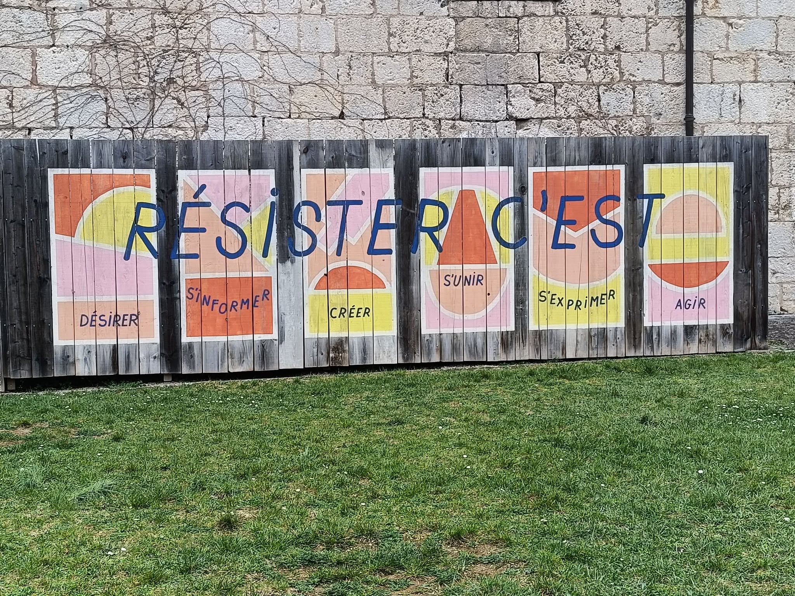

La citadelle
Résister, c’est
D’abord un battement secret sous la peau du monde.
Un refus tranquille
Qui devient flamme.
Désirer
plus grand que ce qu’on nous laisse,
Comme on désire l’aube,
Quand la nuit paraît sans fin.
Non pas ce que l’on nous promet,
Mais ce qui tremble derrière les murs :
L’aube possible.
S’informer,
Pour que la nuit
N’ait plus d’excuses.
Allumer des lampes
Dans les couloirs du doute,
Refuser l’ombre facile.
Ouvrir les yeux comme on ouvre une fenêtre
Dans une maison trop longtemps fermée,
laisser entrer l’air,
Et avec lui la vérité qui pique un peu.
Créer,
Là où l’on voulait
Nous voir répéter.
Planter des graines dans les fissures du béton.
Poser des fleurs sauvages
Dans les fissures du monde.
Dessiner des chemins
Là où l’on nous disait :
« il n’y a rien ».
S’unir,
Jusqu’à ce que les voix
Deviennent foule.
Faire de nos voix dispersées
Une rivière,
Et de cette rivière
Une mer que nul barrage ne retient.
Tresser nos solitudes
Jusqu’à faire une corde de lumière.
S’exprimer,
même lorsque la gorge tremble,
même lorsque le silence
semble plus sûr
et plus confortable.
Laisser nos voix
Traverser les murs du silence.
Et puis — doucement,
Inévitablement —
Vient le moment simple,
Clair comme un pas dans la neige :
Agir
Ici.
Maintenant.
Ensemble,
Pas toujours grand,
Pas toujours héroïque,
Mais vivant —
Comme une source
Qui trouve toujours
Son chemin dans la pierre,
Comme une braise
Qui refuse de mourir
Dans la nuit.
Djamel Metref
Valentigney le 13 Mars 2026
Illustration:
Panneau dans l'enceinte de la citadelle de Besançon

← Tous les poèmes
La citadelle
Carnets de voyages · Résilience et espoir